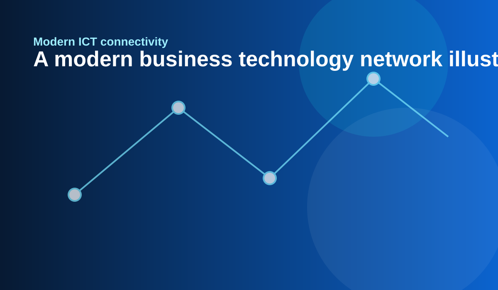
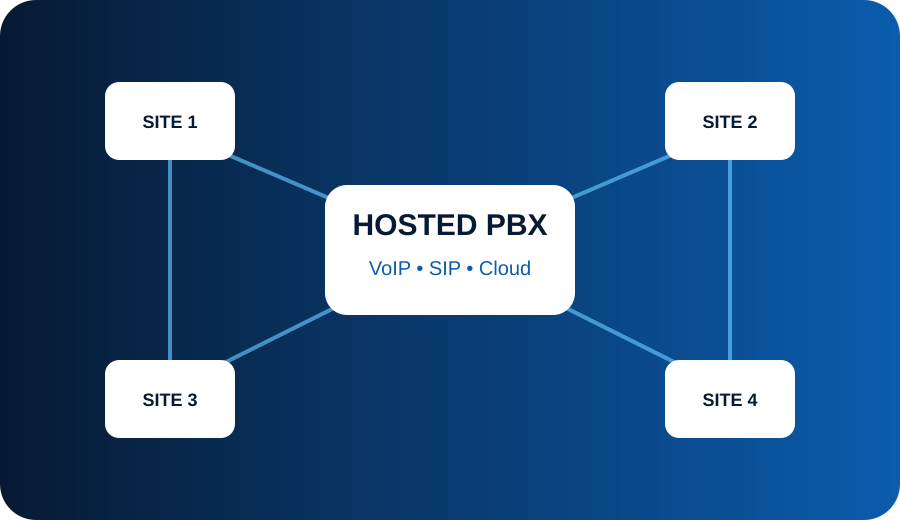
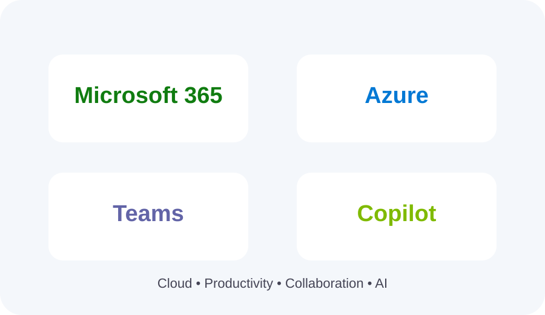
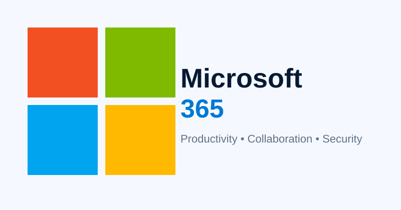
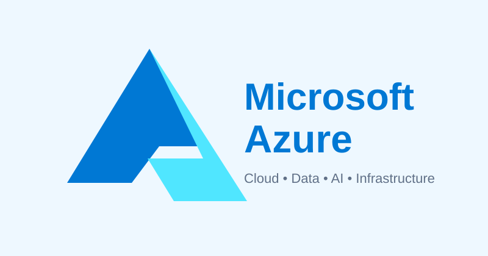
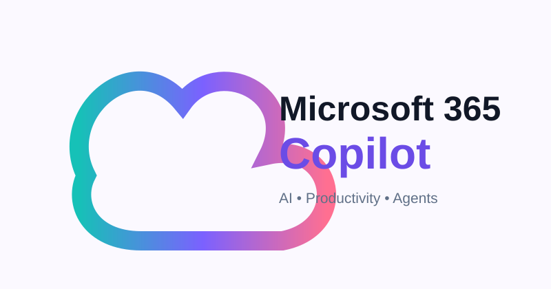

☎
Hosted PBX & VoIP
Cloud-based business telephony, extensions, SIP/VoIP connectivity and IP deskphones.
Discuss PBX →Information & Communication Technology Services for organisations that need reliable voice, connectivity, collaboration, cloud and IT solutions.

Mafube ICT Services is focused on delivering practical technology solutions that help businesses communicate, collaborate and operate efficiently.
The original website highlights IP Telephony, Video Conferencing, Call Centre Solutions, Instant Messaging, Voice Recordings, Email/Fax/SMS, Voice Mail, Presence and Telephony Management. These capabilities have been retained and reorganised into a modern solution portfolio.
Understand the requirement → design the solution → supply and configure → support the environment.
From IP telephony to IT infrastructure, Mafube can help you assemble the right technology stack.
Cloud-based business telephony, extensions, SIP/VoIP connectivity and IP deskphones.
Discuss PBX →Business calling environments with IP phones, extensions, call handling and telephony management.
Discuss telephony →Presence, instant messaging, voicemail, voice recordings and collaboration capabilities.
Discuss UC →Call-centre solutions designed around customer communication, agents and reporting requirements.
Discuss contact centre →Fibre, internet, LTE/5G and business connectivity options, subject to availability and partner coverage.
Request connectivity →Computers, peripherals, networking equipment, accessories and practical IT support services.
Request IT solution →Hosted PBX, Yealink-compatible IP phones, VoIP, SIP and business calling.
Video conferencing, instant messaging, presence, voicemail and recordings.
Fibre, internet, LTE/5G and network infrastructure for connected sites.
Laptops, desktops, peripherals, networking, accessories and cloud-enabled workplaces.
Hosted PBX, SIP, VoIP and IP phones for offices, branches, remote teams and contact centres.

Build a scalable cloud telephony environment with extensions, IVR, queues, voicemail, call recording and business IP phones.

Mafube can help businesses plan and support Microsoft 365, Azure, Teams and Copilot solutions.

Business productivity, email, collaboration and security.

Cloud infrastructure, applications, data and AI services.
Meetings, chat, collaboration and business communications.

AI assistance across Teams, Outlook, Word, Excel and PowerPoint.
We can help you scope a communication, connectivity or IT solution.
Send your requirement and Mafube ICT Services can follow up with the appropriate solution discussion.